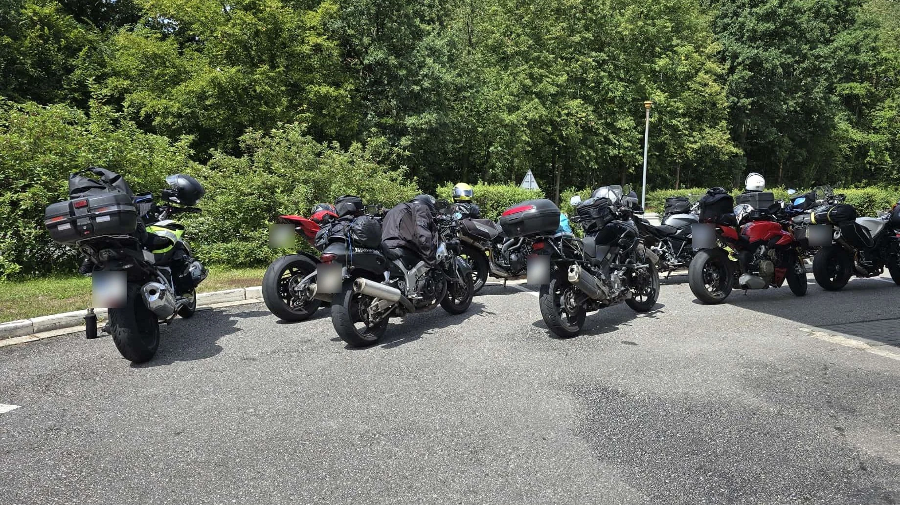
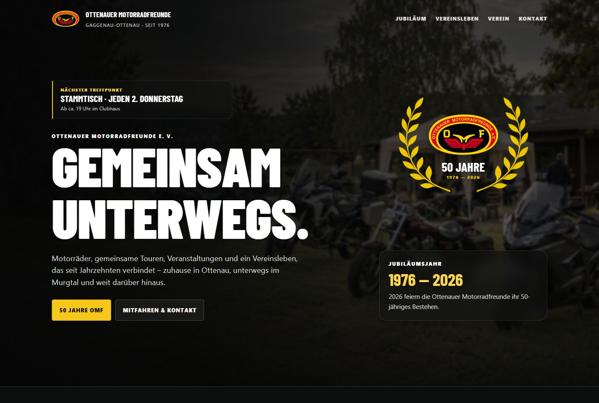
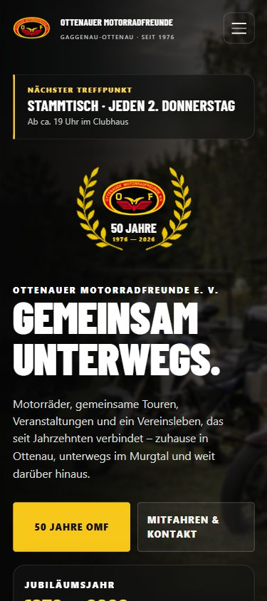

OMF / WEB DESIGNDesktop & Mobil


Webdesign · Karlsruhe & Umgebung
Für deinen Betrieb, deinen Verein oder deine Idee.
Ich entwickle Websites, die zeigen, was dich ausmacht.
01 / Ausgewählte Arbeit
Ein Verein mit Geschichte. Eine Website, die seine Gemeinschaft sichtbar macht.



Die Ottenauer Motorradfreunde verbindet mehr als die nächste Kurve. Ihr neuer Auftritt bringt Vereinsgeschichte, gemeinsame Ausfahrten und Veranstaltungen an einen Ort.
Ein echter Einblick in eine laufende Arbeit. Die verlinkte Entwicklungsvorschau zeigt den aktuellen Stand vor dem offiziellen Start.
02 / Für Menschen, die etwas machen
Deine Website soll nach dir aussehen. Und deinen Besuchern genau das geben, was sie suchen.
Du steckst viel in deine Arbeit. Deine Website sollte das auch zeigen: mit einem klaren Angebot, guten Einblicken und einem kurzen Weg zur Anfrage.
Bevor neue Gäste bei dir einkehren, schauen sie oft online vorbei. Gib ihnen einen Vorgeschmack auf deine Küche und alle wichtigen Informationen auf einen Blick.
Sport, Motorräder oder gemeinsame Traditionen: Euer Verein lebt von den Menschen. Eure Website bringt Mitglieder zusammen und macht Interessierten den Einstieg leicht.
Du hast eine private Idee oder ein Projekt, das hier nicht reinpasst? Erzähl mir davon.
03 / Was du bekommst
Gutes Webdesign sieht nicht nur gut aus. Es macht deine Inhalte verständlich und deine Website angenehm nutzbar.
Über dein Projekt sprechenFarben, Schriften und Bilder ergeben einen stimmigen Auftritt mit eigener Persönlichkeit.
Eine klare Struktur, lesbare Inhalte und gut bedienbare Elemente – vom Smartphone bis zum großen Monitor.
Schlanke Seiten, optimierte Bilder und eine saubere technische Grundlage für Ladezeit und Auffindbarkeit.
Du bekommst eine Einführung in deine Website. Wie du Inhalte pflegst und welche Unterstützung du brauchst, klären wir vorab.
04 / So arbeiten wir zusammen
Du musst dich nicht mit Technik auskennen. Du kennst dein Vorhaben. Ich bringe es mit dir ins Web.
Was machst du? Wen möchtest du erreichen? Wir besprechen deine Idee, deinen Bedarf und den passenden Umfang.
Ich entwickle Struktur und Gestaltung. Du siehst früh, wohin es geht, und gibst dein Feedback.
Ich setze die Seite um, bringe deine Inhalte ein und prüfe Darstellung und Bedienung auf verschiedenen Bildschirmgrößen.
Nach deiner Freigabe folgt der Start. Du lernst deine Seite kennen und weißt, wie es danach weitergeht.
Der Umfang steht fest, bevor es losgeht.
Du erhältst ein individuelles Angebot. Änderungen und laufende Kosten besprechen wir offen.
05 / Der Kopf hinter emfau
emfau ist meine Marke für Websites mit Charakter. Dahinter stehe ich – mit einem Blick für Gestaltung und Freude an guter Technik.
Ich mag Projekte, bei denen man die Menschen dahinter spürt. Den Betrieb um die Ecke. Den Verein, in dem alle mit anpacken. Die Idee, die endlich eine eigene Website verdient.
Von der ersten Skizze bis zur fertigen Seite hast du einen direkten Ansprechpartner. Klar, persönlich und auf Augenhöhe.
06 / Gut zu wissen
Hier sind die ersten Antworten.
Alles Weitere besprechen wir persönlich.
Das hängt von Umfang, Inhalten und Funktionen ab. Eine kompakte Seite braucht einen anderen Aufwand als eine Vereinswebsite mit vielen Bereichen. Nach unserem ersten Gespräch bekommst du ein Angebot mit klar beschriebenen Leistungen. Domain, Hosting und mögliche Betreuung weisen wir getrennt aus.
Das legen wir passend zu deinem Projekt fest. Entscheidend sind der Umfang und wann Texte, Bilder und Rückmeldungen vorliegen. Vor dem Start vereinbaren wir einen realistischen Ablauf mit gemeinsamen Abstimmungen.
Ja. Wir schauen zuerst, welche Inhalte du schon hast und was noch fehlt. Ich helfe dir dabei, dein Angebot zu strukturieren. Falls neue Fotos oder weitere Unterstützung nötig sind, planen wir das transparent mit ein.
Wenn du zum Beispiel regelmäßig Termine, Speisekarten oder Neuigkeiten aktualisieren möchtest, berücksichtigen wir eine passende Pflegefunktion von Anfang an. Für eine selten geänderte Seite kann eine einfachere Lösung sinnvoll sein. Wir wählen gemeinsam, was zu deinem Alltag passt.
Ja. Wir sehen uns an, was bereits funktioniert und wo Gestaltung, Inhalte oder Technik verbessert werden sollten. Daraus ergibt sich, ob eine Überarbeitung oder ein neuer Aufbau die sinnvollere Lösung ist.
Du bekommst eine Übergabe und die vereinbarte Einführung. Ob du danach technische Betreuung, gelegentliche Änderungen oder Unterstützung bei neuen Inhalten möchtest, stimmen wir gemeinsam ab.
07 / Dein nächster Schritt
Erzähl mir von deinem Vorhaben. Gemeinsam finden wir heraus, was deine Website braucht.
Ein paar Sätze reichen für den Anfang.
Vorschau: Der direkte Versand wird noch eingerichtet. Du kannst deine Anfrage hier vorbereiten und als Text mitnehmen.